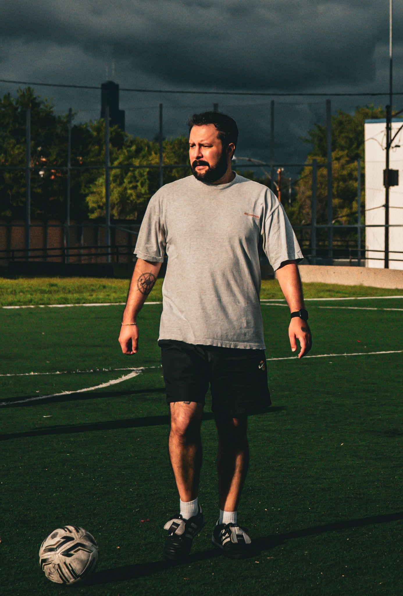
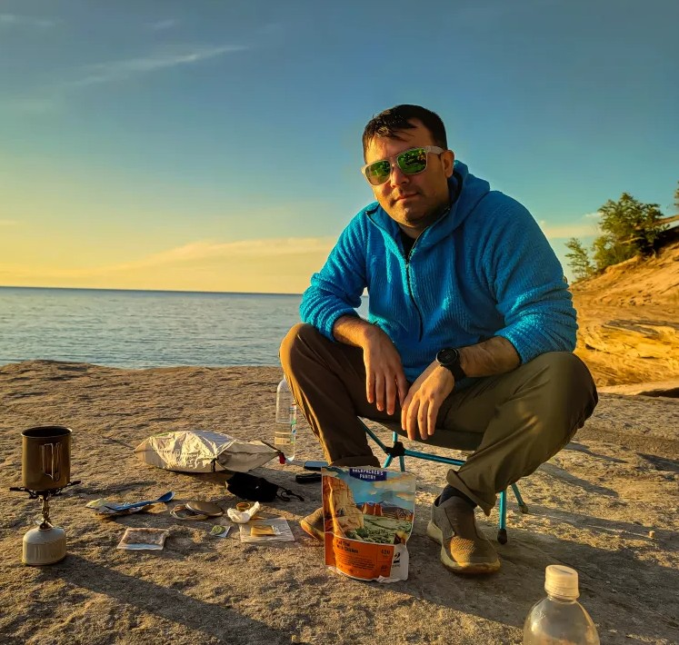
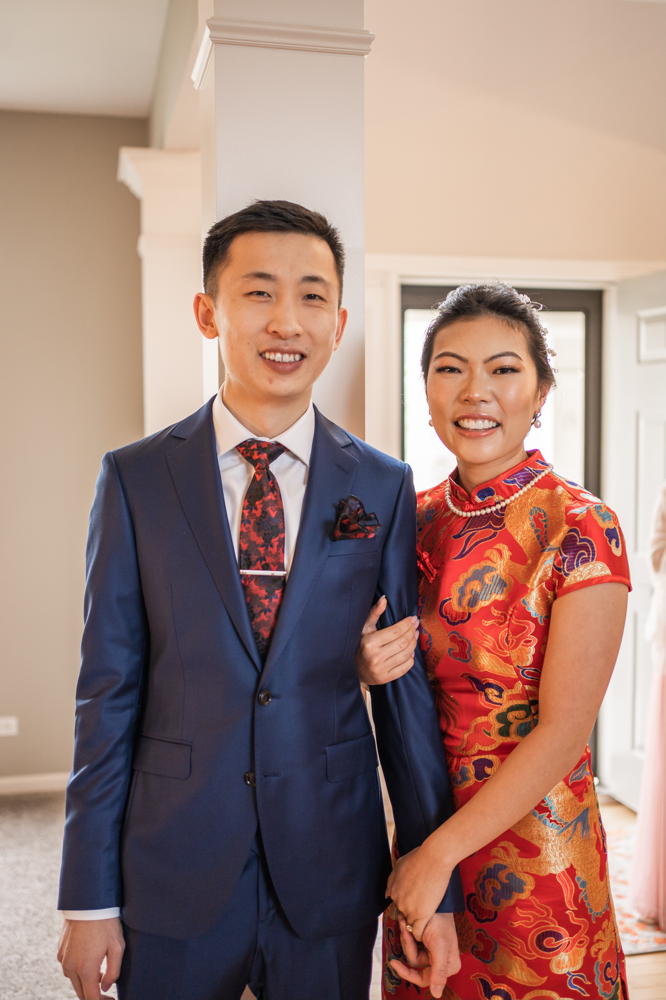

Board of Directors
Andre
Community organizer with 10+ years building neighborhood connections through soccer. PhD holder with expertise in community development and nonprofit governance.

Diego Moreno
South Side resident and longtime community leader. Brings over 15 years of hands-on experience working in Chicago Communities, combining operational leadership with a deep commitment to youth development.
Julian da Silva
Experienced in community programming and youth development. Focuses on creating inclusive spaces and sustainable community partnerships.
Jordan da Silva
Dedicated to neighborhood empowerment and authentic community building. Brings operational expertise and commitment to neighbor-led programming.
Community Directors

Alex Alvizo
Born and raised on the South Side of Chicago. Engineer by trade. Leverages these qualities to help deliver a safe and fun environment for players in the most efficient way possible.
Marcos Beltran
Southside resident. Video game and soccer fanatic. With a background in education and youth development, works to help members grow and better our communities.

Michael Wang
Started playing soccer in late teens but loved the team aspect. Enjoys meeting new people and building community in the suburbs. Works in data engineering.

Nicole
Strategic leader directing women's programming and creating empowering community spaces for female soccer players.

Natalie
Dedicated community leader focused on building inclusive women's soccer programming and neighborhood connections.
Community Hall of Fame
David Benavidez
Co-founder whose vision helped establish our commitment to authentic community development. The annual David Benavidez Memorial Tournament honors his legacy while supporting local health initiatives.
Learn About David's StoryLeadership Impact
Governance & Transparency
Legal Structure
Illinois Nonprofit Corporation with 501(c)(3) federal tax-exempt status
Volunteer-Powered
100% volunteer leadership. No executive salaries or overhead
Financial Transparency
All financial decisions shared with community. Annual reports available
Community Accountability
Open meetings and neighbor-led decision making
Join Our Community Leadership
Whether you have 2 hours a month or 10 hours a week, there's a meaningful way to contribute.
Volunteer With Us Support Our Work